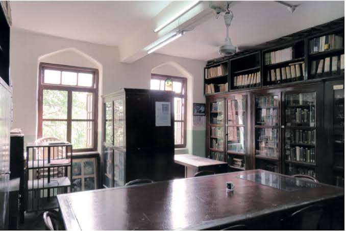

Explore the botanical names, families, and ecology of every tree across our campus. Scan a QR code beside any tree, or browse the full directory right here.
The Blatter Herbarium (BLAT), located at St. Xavier's College, Mumbai, is a major centre for plant taxonomy and botanical research. Established in 1906 by Jesuit priest and botanist Rev. Fr. Ethelbert Blatter, it preserves an important legacy of botanical exploration and scientific study.
The herbarium was named in Fr. Blatter's honour in 1941. Its collections include vascular plants from Western India, algae, mosses and fungi from Mumbai, as well as seeds and wood samples important to botanical research.
Inspired by this botanical heritage, Flora of SXC documents trees growing across the college campus, helping students and visitors discover their botanical names, families, characteristics and ecological importance.
Explore Blatter Herbarium
Blatter Herbarium, St. Xavier's College, MumbaiThe Department of Botany at St. Xavier's College, Mumbai, has a long-standing tradition of botanical education, scientific inquiry and the study of plant diversity. Its work connects classroom learning with practical experiences in the natural world.
Field trips, plant identification, ecological studies and research help students explore the diversity of plants and understand their importance in ecosystems. The department's botanical resources, including the Blatter Herbarium, support the study and documentation of plant life.
Flora of SXC builds on this tradition by documenting the trees growing across the college campus. Through botanical names, plant families, photographs and informative profiles, the directory helps students and visitors discover the living diversity around them.
Explore the Botany DepartmentExplore the botanical diversity of the Central Garden, Woods and Gate. Tree records will appear as the campus survey progresses.
A glimpse of the trees documented so far — tap any card to read its full botanical profile.
Every documented tree around campus carries a small weatherproof QR tag. Here's what happens when you scan one.
Point any smartphone camera or QR scanner app at the tag fixed near the tree trunk.
Each QR code encodes a unique link straight to that tree's dedicated profile page.
Your browser opens the Flora of SXC page for that exact tree — no app install needed.
Read the botanical name, family, uses and more — with the real photo right there in front of you.